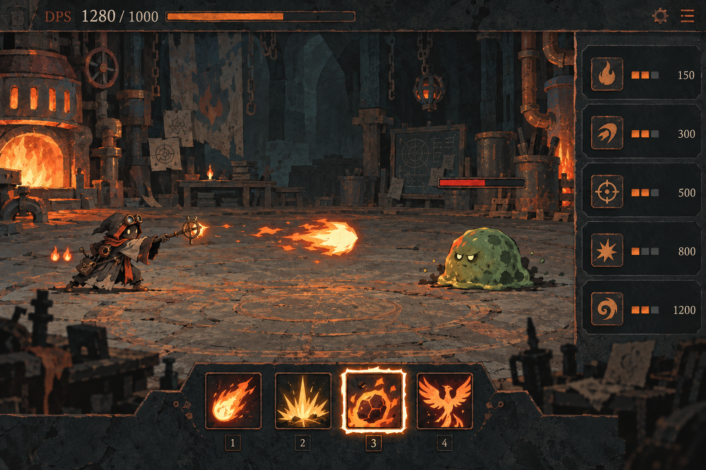
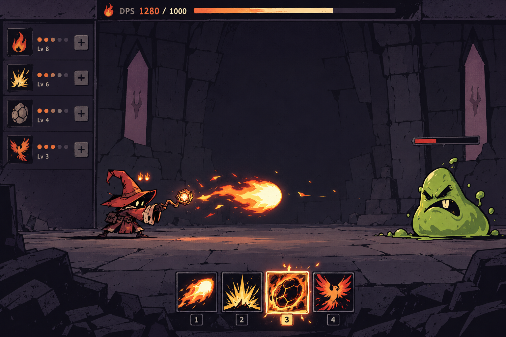
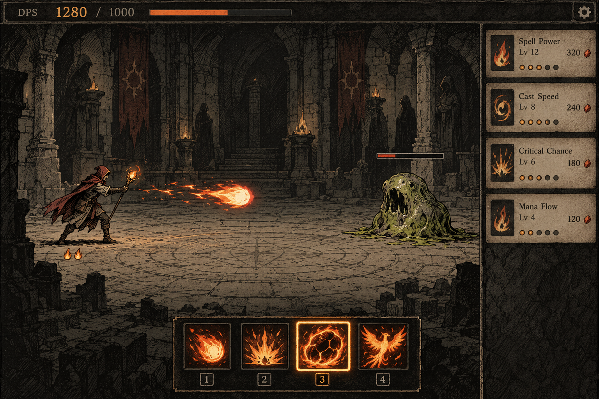

화염 마법사 · 아트 방향 비교
스타일 탐색용 이미지 시안입니다. 실제 게임 화면이나 구현된 기능을 의미하지 않습니다. 같은 전투 구도를 요청했지만 생성 이미지의 배치에는 차이가 있습니다.
01 · 그을린 마법 공방
재와 구리, 거친 붓질. 불꽃을 실험하고 축적하는 게임의 정체성을 만드는 방향.

02 · 판타지 만화
굵은 윤곽선과 단순한 덩어리. 빠른 연계와 과장된 타격 동작에 적합한 방향.

03 · 고전 RPG 삽화
펜화와 제한된 색. 오래된 마법책 같은 분위기와 향수를 살리는 방향.

평가 기준: 작은 크기에서 캐릭터와 스킬 구분 · 몰열 상태의 우선순위 · 장시간 플레이의 피로도 · 몬스터와 장비 확장 시 스타일 유지.